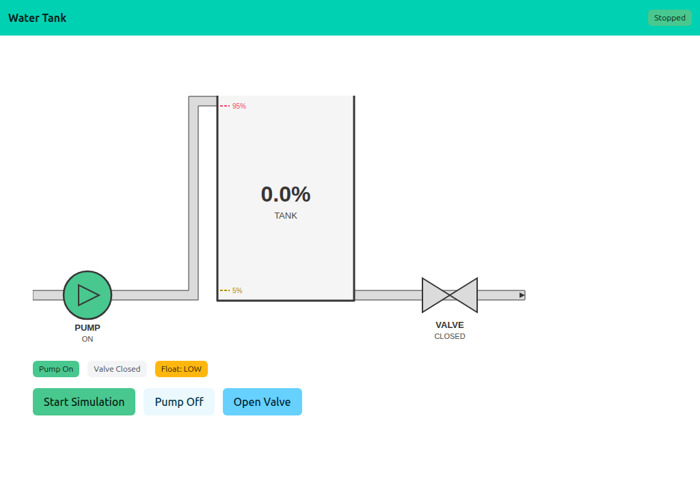
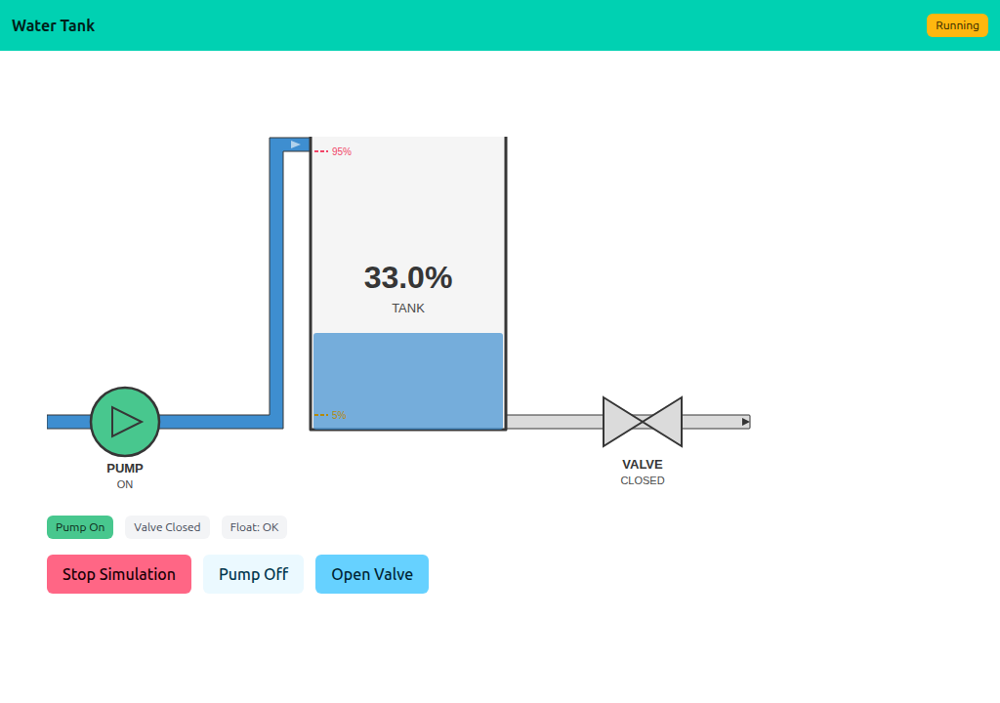

07 — Water Tank
A real-time SCADA-style dashboard with a simulated water tank. The model is a background goroutine that ticks the level every 500 ms; the page polls every second to redraw the schematic. Pump and valve are clickable on the SVG and via buttons.
Interactivity level: 3 — Polling (whole page refresh) State scope: Global (server build — one shared simulation) / Individual (WASM build — each browser runs its own tank)


The simulation
Simulation is a tiny state machine: tank level, pump on/off, valve open/closed, plus a tick goroutine started from Start():
go func() {
ticker := time.NewTicker(500 * time.Millisecond)
for {
select {
case <-ctx.Done(): return
case <-ticker.C: s.tick()
}
}
}()
Each tick adds 3 if the pump is on, subtracts 1 if the valve is open, and trips the float switches at 5% and 95%. Stop() cancels the context; the goroutine exits cleanly.
Schematic — shared widget
The SVG is rendered by watertank.Render(state), shared across examples 07–11. The example's only schematic-related code is Snapshot(), which copies the simulation state into a watertank.State:
func (s *Simulation) Snapshot() watertank.State {
s.mu.Lock(); defer s.mu.Unlock()
return watertank.State{
Level: s.tankLevel,
PumpOn: s.pumpOn,
ValveOpen: s.valveOpen,
Running: s.running,
PumpHref: "/pump",
ValveHref: "/valve",
}
}
The <a href> wrapping pump/valve in the SVG makes the schematic itself clickable — clicking the pump POSTs to /pump and toggles it.
Dual build: server and WASM
main.go and main_wasm.go share simulation.go. The server build uses app.HandleRoot/HandleDisplay for polling; the WASM build calls into the same Simulation via a thin JS bridge.
//go:build !(js && wasm)
func main() {
sim := &Simulation{pumpOn: true}
app := lofigui.NewApp()
// ... register /, /start, /stop, /pump, /valve ...
log.Fatal(http.ListenAndServe(":1347", nil))
}
Running
task go-example:07 # server on :1347
task docs:capture:07 # capture the two screenshots above